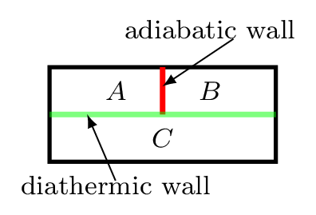
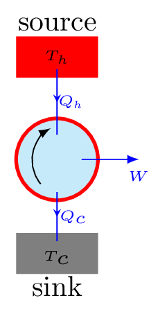
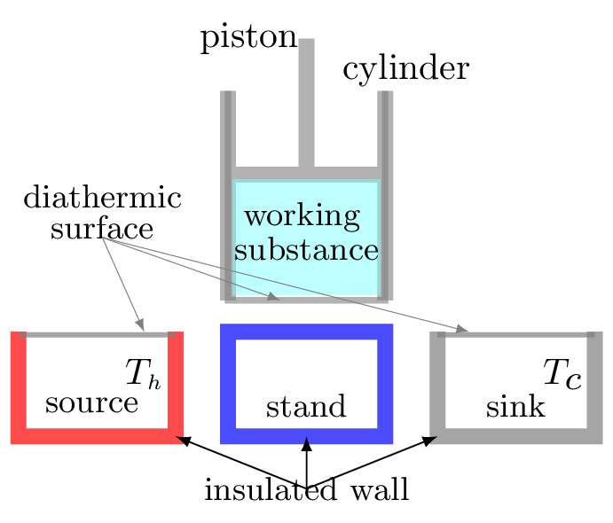
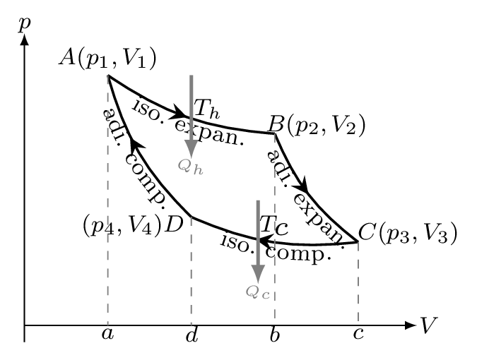
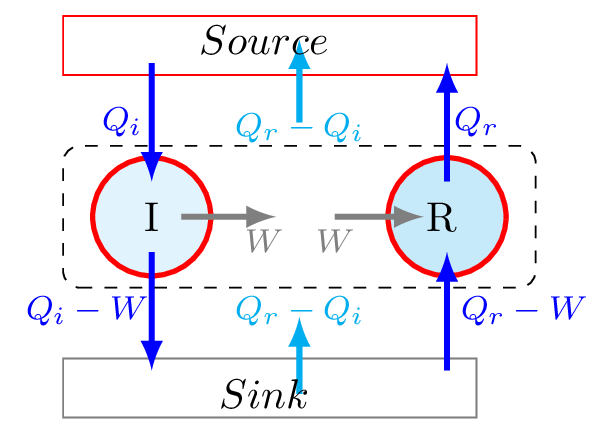
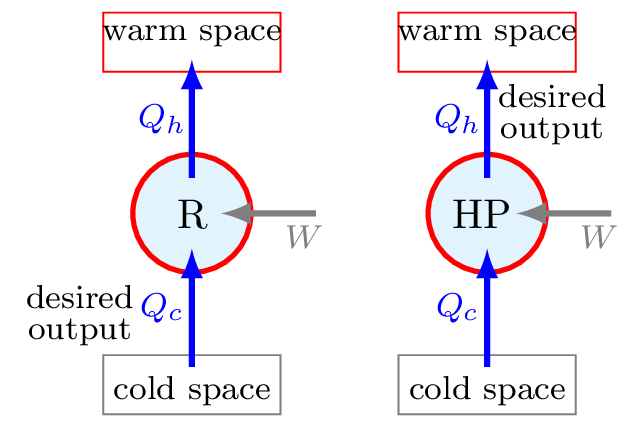
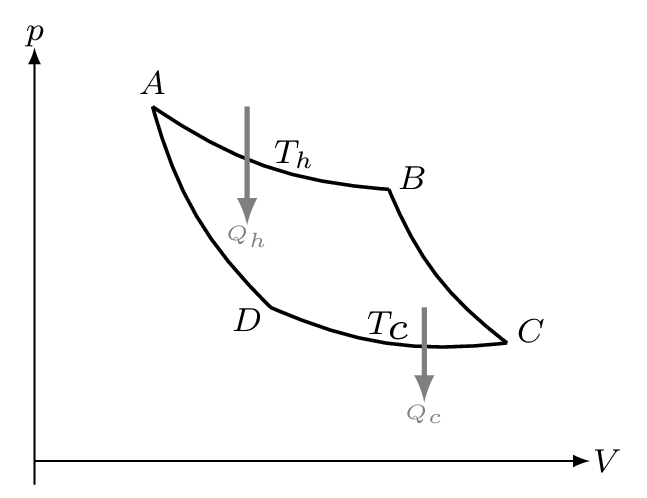

Section 10.6 Thermodynamics
The word thermodynamics was coined by Lord Kelvin in 1849. It is a combination of two words, thermo that refers heat and dynamics that refers force or motion of the molecules or atoms. It is the branch of physics which deals with heat energy, its transfer, and energy conversion. It begins its journey with the development of fire. People used to believe that every substance has some amount of invisible fluid called caloric fluid. When it moves from one object to another the object becomes hot or cold. The object which loses caloric fluid becomes cold and which gains caloric fluid becomes hot. We know now that there is nothing like caloric fluid but it is a heat energy which exists in a material due to molecular vibration. Heat is a form of energy that can flow due to temperature difference. We can obtain an infinite amount of heat energy out of the material. For example, we can produced an infinite amount of heat from water by performing a continuous mechanical work (as in Joul’s experiment Figure 10.6.3.(a)) without changing the condition of water. Work is also an energy that is transferred from one system to another without considering the temperature difference between them.
There are several processes in nature which occur always in a particular fashion. For examples, water falls from a high elevation to low elevation, heat flows from high temperature to low temperature, current flows from high electric potential to low electric potential, in diffusion molecules flows from high concentration to low concentration, we grow older not younger, our hair turns gray not black as we go older, and so on. Even in the conversion of mechanical energy into heat energy, for example if you rub your right hand finger on the palm of left hand (mechanical work) you produce a heat but reverse does not seem to happen. Yes, some events can happen in both directions, for example you can heat a gas and you can cool a gas, you expand a gas and compress a gas, etc but even in that processes we can see there are some changes happen in the surroundings. We will discuss those events later in second law of thermodynamics which talks about the directional property of heat energy and its conversion. The conversion of mechanical energy into electrical energy and vice a versa is 100% possible in ideal case but if we want to convert heat energy into mechanical work (energy) then 100% conversion is not possible even in the ideal case. However, we can convert all of our mechanical energy into heat energy. Hence we can tell that the nature always follows a certain pattern to have some process to occur. Nature obeyes simple and universal laws that can be expressed in the mathematical language. Thermodynamics is thus a fundamental subject of nature that describes the basic laws governing the physical process and its occurrence associated with the transfer of energy and its conversion. It is based on our common experience, observation, and experimentation. It has two parts in observational points of view, that is microscopic view (statistical thermodynamics) and macroscopic view (classical thermodynamics). The characteristic of the over all behavior the system can be sensed in classical thermodynamics. The behavior of system on the basis of its molecular property can be studied in statistical thermodynamics. That is, the classical thermodynamics is an average outcome of statistical thermodynamics. Thermodynamics provides a very important aspects of our life that tells us which process in nature can only occur and which process can not occur.
To understand the thermodynamical process we need to know about the system and surroundings. The system is the part of the universe being studied, while the surroundings are the rest of the universe that interacts with the system. The system and surroundings are separated by a hypothetical line called a boundary. It may be real or imaginary, for example water in a beaker is separated from rest of the room, then the beaker behaves as a boundary, water as a system, and the rest of the room as surroundings. In other word, a system is a definite amount of matter bounded by a closed surface. Anything outside of this closed surface is called a surroundings. The closed surface is a boundary which separates the system and the surroundings. The boundary may be real or imaginary, it may be fixed, flexible, or distorted. System and surroundings must interact with each other by exchanging energy of any forms. System which can exchange energy and matter both with the surroundings is called open system. For example, boiling water in an open pot. If the system can exchange only energy but not the matter with its surroundings then system is called a closed system. For example, a cup of coffee with a lid on it. Some system neither exchange energy nor the matter with its surroundings then it is called an isolated system. For example, a thermos flask.
Subsection 10.6.1 Thermodynamical Variables
The state of a thermodynamic system can be specified in terms of macroscopic state variables such as volume, V, temperature, T, and pressure, p. Out of these three, two are independent variables while the third may be considered as their function. In general, two of these parameters are needed to completely specify a thermodynamical system. These two types of variables are also known as extensive and intensive variables. Variables that depend on the size of a system such as volume, V, amount of substance (moles, n ), entropy, S, etc. are called extensive variables. Variables that do not depend on the size of a system such as temperature, T, pressure, p , density, \(\rho\text{,}\) etc. are called intensive variables.
Subsection 10.6.2 Laws of Thermodynamics
The laws of thermodynamics define fundamental physical quantities such as temperature, energy, and entropy that characterize thermodynamic systems. There are four laws of thermodynamics.
Subsubsection 10.6.2.1 Zeroth Law of Thermodynamics

It defines the temperature and states the thermal equilibrium condition. Thermal equilibrium is a state achieved by two or more systems after being in contact with one another through a diathermic wall. If an object with a higher temperature comes in contact with another object at a lower temperature, it will transfer some of its heat energy to the object at lower temperature till they come to the same temperature. If two systems are each in thermal equilibrium with a third system, then they must be in thermal equilibrium with each other. If temperature of object A = temperature of object C and temperature of object B = temperature of object C, then temperature of object A = temperature of object B [Figure 10.6.2].
Subsubsection 10.6.2.2 First Law of Thermodynamics
The first law is a consequence of conservation of energy and requires that a system may exchange energy with its surroundings strictly by heat flow or work. Joule has established the equivalence between heat and mechanical work as
\begin{equation*}
W=JQ,
\end{equation*}
where W is amount of work done (in joule) on the system, Q is the amount of heat (in calorie) produced in the system, and J is a mechanical equivalent of heat also known as Joule’s constant. The value of \(J\) is \(4.1860 \,J/cal\text{.}\) The first law states that when a given amount of work, W is done on a system, an equivalent amount of heat, Q is produced or when a certain amount of heat, Q disappears from the system an equivalent amount of work W is obtained. The equivalence is given by the constant \(J\text{.}\) Heat is thus a form of energy.
The Joule apparatus [Figure 10.6.3.(a)] consisted of a weight suspended by string over a pulley, which in turn was wound around a winding drum. As long as the drum remained stationary, the weight remained at rest. When the drum was released, the weight was set free to fall, and its potential energy began converting to kinetic energy. In the process, the string attached to the weight unwound from the drum, which caused the drum to turn and along with it the paddle wheel attached to it. The rotating paddles agitated the water, causing its temperature to rise. Joule concluded from this experiment that the mechanical energy of the spinning paddle wheel had been converted into heat energy, which raise the temperature of the water. Joule’s experiment thus proved the link between potential, kinetic, mechanical, and heat energies. Joule’s experiment thus helped establish the principle of conservation of energy.
Let us consider a system which absorbed \(Q\) amount of heat and does \(W\) work done while going from initial state \(i\) to the final state \(f\text{.}\) The final state reached by the system may be achieved by the different paths but the quantity \(Q-W\) is the same. The quantity \(Q-W\) is known as the change in internal energy \(\Delta U \) of the system.
Consider a gas cylinder [Figure 10.6.3.(b)] with frictionless piston placed on a hot bath, then the change in internal energy of the cylinder is given by
\begin{equation}
\,dU = \,dQ-\,dW \tag{10.6.1}
\end{equation}
where \(\,dQ \) is the amount of heat energy absorbed by the gas, and \(\,dW\) is the amount of work done by the gas in moving its piston from position \(i\) to \(f\text{.}\) This is the mathematical form of I law of thermodynamics. The I law establishes an exact relation between heat and work. This tells us that it is impossible to get the work from any machine without giving it an equivalent amount of energy in any form.
Quasi static state: A process during which the system only deviates from equilibrium by an infinitessimal amount. This may happen if the gas is allowed to expand or compress very slowly. As the piston compresses the pressure inside the gas remains very nearly uniform at all times during the process. So, the system never deviates significantly from mechanical equilibrium. Quasi static process is also a reversible process. A system is in thermodynamical equilibrium if it has achieved: mechanical equilibrium, chemical equilibrium, and thermal equilibrium. Thermodynamic variables like temperature, pressure etc. can only be used to describe the system that has achieved thermodynamical equilibrium.
Subsection 10.6.3 Application of I law of thermodynamics
-
Specific heat capacity of a gas: Consider a mole of gas is heated in the cylinder with frictionless piston, then the change in internal energy of the gas is given by the first law of thermodynamics (10.6.1)\begin{equation*} \,dQ=\,dU+\,dW \end{equation*}where \(\,dW \) is the infinitesimal work done by the gas in moving a piston from initial position \(i\) to the final position \(f\text{,}\) and is given by\begin{equation*} \,dW = F\,dx= pA\,dx= p\,dV \end{equation*}where \(A\) is area of cross-section of the piston, \(F\) is force applied by the gas molecules on the surface of the piston.\begin{equation} \,dQ=\,dU+ p\,dV \tag{10.6.2} \end{equation}If the piston is fixed from moving, then at constant volume, \(\,dV = 0\text{,}\) and\begin{equation*} \,dW = p\,dV = 0 \end{equation*}\begin{equation} \therefore \quad \,dQ=\,dU \tag{10.6.3} \end{equation}But, for n mole of a gas\begin{equation*} \,dQ=n C\,dT \end{equation*}where C is molar specific heat capacity of the gas.\begin{equation*} \,dQ=mc\,dT \end{equation*}where \(m\) is mass of the gas, but it is convenient to take mole instead of mass as an amount of gas. At constant volume,\begin{equation} \,dQ=n C_{v}\,dT \tag{10.6.4} \end{equation}From eqns. (10.6.3) and (10.6.4), we have -\begin{equation} \frac{\,dU}{\,dT}=nC_{v} \tag{10.6.5} \end{equation}At constant pressure,\begin{equation} \,dQ=n C_{p}\,dT \tag{10.6.6} \end{equation}\begin{equation} \therefore\quad \frac{\,dQ}{\,dT}=nC_{p} \tag{10.6.7} \end{equation}Now, differentiating eqn. (10.6.2) with respect to \(T\text{,}\) we get -\begin{equation} \frac{\,dQ}{\,dT} = \frac{\,dU}{\,dT} +p\frac{\,dV}{\,dT} \tag{10.6.8} \end{equation}But from euation of state of a gas (10.5.8),\begin{equation*} pV = nRT \end{equation*}Differentiating this equation with respect to \(T\) at constant \(P\text{,}\) we get -\begin{equation} \text{or,}\quad p\frac{\,dV}{\,dT} = nR \tag{10.6.9} \end{equation}substituting the values in eqn. (10.6.8) from eqns. (10.6.5) and (10.6.7), we get -\begin{equation*} nC_{p}=nC_{v}+nR \end{equation*}\begin{equation} \therefore\quad C_{p}-C_{v} = R \tag{10.6.10} \end{equation}This is the relation between molar specific heat capacity of a gas at constant pressure \(C_{p}\) and molar specific heat capacity of a gas at constant volume \(C_{v}\text{.}\) From the kinetic theory of gas, the internal energy of a monoatomic gas [(10.5.11)] is given by\begin{equation*} U=\frac{3}{2}nRT \end{equation*}\begin{equation} \therefore\quad \frac{\,dU}{\,dT} = \frac{3}{2}nR \tag{10.6.11} \end{equation}Hence, from eqns. (10.6.8), (10.6.9), and (10.6.11), we have -\begin{equation*} \frac{\,dQ}{\,dT} =\frac{3}{2}nR + nR =\frac{5}{2}nR \end{equation*}Now, the ratio of the specific heat at constant pressure to the specific heat at constant volume of a monoatomic gas is given by\begin{equation*} \gamma = \frac{C_{p}}{C_{v}} = \frac{\frac{5}{2}nR}{\frac{3}{2}nR} = \frac{5}{3} \end{equation*}The idea of degrees of freedom can be extended to diatomic and polytomic gases. It can be shown that the value of \(\gamma\) can be expressed as\begin{equation*} \gamma=\frac{f+2}{f} \end{equation*}where \(f\) is the number of degrees of freedom per molecule. For a monatomic gas, we find that\begin{equation*} \gamma = \frac{3+2}{3} = \frac{5}{3} \end{equation*}since \(f=3\) for a monoatomic gas.\begin{equation*} \gamma = \frac{5+2}{3} = \frac{7}{3} \end{equation*}for a diatomic gas as \(f=5\) .
-
Isothermal process: In an isothermal process system remains at constant temperature, \(T\text{,}\) hence,\begin{equation*} \,dT =0. \end{equation*}As internal energy of an ideal gas [(10.5.11)] is a function of temperature only,\begin{equation*} U=\frac{3}{2}nRT \end{equation*}we have\begin{equation*} \,dU = 0 \end{equation*}Therefore, from I law of thermodynamics, we have -\begin{equation*} \,dQ=\,dW= p\,dV \end{equation*}
-
Adiabatic process: In an adiabatic process system does not exchange heat \(Q\text{,}\) with surroundings, hence,\begin{equation*} \,dQ =0. \end{equation*}Therefore, from I law of thermodynamics, we have -\begin{equation*} \,dQ=\,dU + p\,dV \end{equation*}\begin{equation*} \text{or,}\quad 0 = C_{v}\,dT+p\,dV \end{equation*}\begin{equation} \therefore \quad C_{v}\,dT = -p\,dV \tag{10.6.12} \end{equation}\begin{equation*} \text{or,} \quad \,dU = -\,dW \end{equation*}That is, internal energy increases exactly by the amount of work done on the system. Also,\begin{equation*} pV=RT \end{equation*}for 1 mole of a gas.\begin{equation*} \text{or,}\quad p\,dV + V\,dp = R\,dT =\left(C_{p}-C_{v}\right)\,dT \end{equation*}\begin{equation*} = C_{v}\left(\frac{C_{p}}{C_{v}}-1\right)\,dT = \left(\gamma-1\right)C_{v}\,dT \end{equation*}\begin{equation*} \text{or,}\quad p\,dV + V\,dp = - \left(\gamma-1\right)p\,dV \end{equation*}\begin{equation*} \text{or,}\quad p\,dV \left(1+\gamma-1\right) + V\,dp = 0 \end{equation*}\begin{equation*} \text{or,}\quad \gamma p\,dV + V\,dp =0 \end{equation*}\begin{equation*} \text{or,}\quad \frac{ \,dp}{p} +\gamma \frac{\,dV}{V} = 0 \end{equation*}integrating both sides, we get -\begin{equation*} \ln p +\gamma \ln V =constant \end{equation*}\begin{equation*} \text{or,}\quad \ln p + \ln V^{\gamma} =constant \end{equation*}\(\because n\ln m = \ln m^{n}]\)\begin{equation} \therefore \quad pV^{\gamma} =const.\tag{10.6.13} \end{equation}\([\because \ln m +\ln n = \ln (mn)] \)
-
Isobaric process: A process at constant pressure,\begin{equation*} \,dp=0 \end{equation*}is called an isobaric process.\begin{equation*} \,dQ=\,dU+p\,dV \end{equation*}At the change of phase, temperature and pressure remains constant, i.e.,\begin{equation*} \,dT=0, \end{equation*}\begin{equation*} \text{and} \quad \,dp=0. \end{equation*}\begin{equation*} \therefore \,dQ=p\,dV \end{equation*}\([\because U \propto T]\)
-
Isochoric process: A process at constant volume,\begin{equation*} \,dV=0 \end{equation*}is called an isochoric process.\begin{equation*} \,dQ=\,dU \end{equation*}
-
Free expansion: It is an adiabatic process in which no work is performed on or by the system. Consider two chambers of an isolated system, the one chamber of which contains a gas while the other is completely evacuated. Both the chambers are connected with a stopcock. When stopcock is suddenly open, the gas rushes into the evacuated chamber and expands freely. Free expansion means gas has to do no work at all. Since an isolated system does not exchange heat from outside world,\begin{equation*} \,dQ=0 \end{equation*}and gas expands freely so\begin{equation*} \,dW=0 \end{equation*}Therefore from I law of thermodynamics,\begin{equation*} \,dU=0 \end{equation*}That is, initial internal energy of the gas is same as its final internal energy.
Subsection 10.6.4 Second Law of Thermodunamics
The first law of thermodynamics gives an equivalence between the quantity of heat and the mechanical work or vice-versa. This law does not tell the limitation and condition of conversion. That is how much heat is converted into work and whether the transformaiton itself can take place or not. The first law does not tell anything about the direction of transformation of energy. It does not indicate whether heat can flow from a cold end to a hot end or not. The first law places no restriction on the direction of a process, and satisfying the first law does not guarantee that the process will occur. In practice, it is not possible to convert the heat energy into an equivalent amount of work. Thus, we need another general principle to identify whether a process can occur or not. The law specifying the condition of transformation of heat into work is called the second law of thermodynamics. The second law of thermodynamics tells the direction of the flow of heat. It also tells that heat energy cannot be completely converted into equivalent work.
Kelvin-Plank statement of the second law: It is impossible for any device that operates on a cycle to receive heat from a single reservoir and produce a net amount of work [Figure 10.6.4.(a)]. For heat engine to operate, the working fluid has to exchange heat with heat sink as well with the heat source. A heat engine that violates the Kelvin-Planck statement of the second law cannot be built.
Clausius statement of the second law: It is impossible to construct a device that operates in a cycle and produces no effect other than the transfer of heat from a cold body to a hot body. In other words, a refrigerator will not operate unless an external work is done on its compressor [Figure 10.6.4.(b)].
The above two statements are equivalent to each other. Consider a refrigerator that transfers heat \(Q_{c}\) from a cold to a hot body without having any work done on it [Figure 10.6.4.(c)], thus violating the Clausius statement. Now, suppose an engine working between the same hot and cold bodies takes in heat \(Q_{h}\) from a hot body and gives out heat \(Q_{c}\) to the cold body [Figure 10.6.4.(c)]. The engine does not violate any law by itself, but if the refrigerator and engine combined together [Figure 10.6.4.(d)], they form a device that takes in heat \(Q_{h}-Q_{c}\) from the hot body and converts all into work without delivering any to the cold body. This is a violation of Kelvin’s statement. Similarly, a violation of the Kelvin’s statement leads to violation of the Clausius statement.
Subsection 10.6.5 Heat Engines
Heat engine is a device of converting heat continuously into work. The device absorbs heat from a high temperature reservoir, converts part of this energy into work and rejects the rest of the energy as heat to a low temperature drain. Hence, it consists of three essential parts: Source or reservoir for the supply of heat at high temperature. Sink or drain for the rejection of heat at lower temperature. Working Substance which absorbs heat from the source.
The working substance undergoes a cycle of operation in which it absorbs certain quantity of heat from the source, converts a part of it into work and rejected rest to the sink as shown in Figure 10.6.5. Finally it reaches to the initial stage where its internal energy is the same. By performing the same cycle again and again, heat is continuously converted into work.

Efficiency: Let \(Q_{h}\) is the amount of heat absorbed by the working substance from the source at high temperature \(T_{h} \,K.\) It does the work W and reject \(Q_{c}\) amount of heat to the sink at lower temperature \(T_{c} \,K.\) The efficiency of the heat engine then defined as the ratio of the work done (output) by the engine to the amount of heat supplied (input) to the engine. That is,
\begin{equation*}
\eta = \frac{W}{Q_{h}}
\end{equation*}
If there is no dissipative losses (i.e., no frictional loss in engine, etc.) then heat rejected would be
\begin{equation*}
Q_{c}= Q_{h} - W
\end{equation*}
\begin{equation*}
\Rightarrow\quad W=Q_{h}-Q_{c}
\end{equation*}
Hence
\begin{equation*}
\eta = \frac{Q_{h}-Q_{c}}{Q_{h}}
\end{equation*}
\begin{equation*}
\therefore\quad \eta = \left(1-\frac{Q_{c}}{Q_{h}}\right)\times 100\%
\end{equation*}
Since, efficiency is normally defined in percentage.
Subsection 10.6.6 Carnot’s Heat Engine

Carnot’s Assumption: Heat cannot be taken in at a certain temperature and converted to work with no other change in the system of surroundings. Carnot presented theoretically an ideal heat engine, free from all imperfection of actual engines. The engine operates between source and sink each of which is maintained at constant temperature. The engine is known as a Caront’s engine and its cycle of operation as the Carnot’s cycle. The schematics of engine is shown in Figure 10.6.6. The working substance is an ideal gas contained in an insulated cylinder with conducting bottom surface. A hot body of high thermal capacity maintained at a constant temperature \(T_{h} \,K\) serves as a source. A cold body maintained at a constant temperature \(T_{c} \,K \) serves as a sink. A stand has a perfectly insulated wall.
The cylinder can be moved in cycle from source, stand, sink, stand, and back to source without doing any work.
Subsection 10.6.7 Reversible Heat Engines
A reversible process is defined as a process that can be reversed without leaving any trace on the surroundings. It means both system and surroundings are returned to their initial states at the end of the reverse process. Processes that are not reversible are called irreversible.
Reversible heat engine is just the heat engine which is running in the reverse direction of heat engine. In reversible heat engine all the three components re-assume exactly their original conditions and no changes are left in the surroundings. Such an engine can be realized if, the engine is free from friction, the process is infinitely slow, and working substance never differs appreciable from its surroundings. No heat engine can have efficiency greater than a reversible heat engine.
Subsection 10.6.8 Carnot’s Cycle:
The Carnot engine operates in the four steps of Carnot cycle which are perfectly reversible.

Step 1, Isothermal Expansion: Consider a mole of gas as a working substance in a cylinder [Figure 10.6.7]. The initial state of the gas is \((p_{1},V_{1})\) denoted by point A in the figure 10.25 and it’s temperature is the same as that of source \(T_{h}\, K\text{.}\) Let the cylinder be placed on the source and allowed to expand so slowly that the temperature remains constant at \(T_{h} \) throughout the expansion while \(Q_{h}\) amount of heat is being absorbed by the gas. The final state \((p_{2},V_{2})\) of the gas is represented by a point B. Because none of the heat goes into changing the temperature of the gas, all of the heat goes into pushing the piston up as the gas expands. Thus all of the heat, \(Q_{h}\) is turned into work, \(W_{1}.\) That is,
\begin{equation*}
Q_{h}=W_{1}=\int\limits^{v_{2}}_{v_{1}} p\,dV = RT_{h}\int\limits^{v_{2}}_{v_{1}} \frac{\,dV}{V}
\end{equation*}
\([pV=nRT,\quad n=1 \,mole]\)
\begin{equation*}
\therefore\quad W_{1} = RT_{h}\left[\log_{e}\right]^{v_{2}}_{v_{1}} = RT_{h}\log_{e}\frac{V_{2}}{V_{1}} =area ABba
\end{equation*}
Step 2, Adiabatic Expansion: Now the cylinder is removed from the source and placed on the stand. The gas is then allowed to expand adiabatically with no heat added to the system. The gas continues to expand, and the temperature of the gas drops to the temperature of the cold reservoir, \(T_{c},\text{.}\) If the volume of the gas has expanded, and the pressure is constant, then the temperature has to drop to compensate when reaches to a point \(C(p_{3},V_{3}).\)
The work done \(W_{2}\) in this case is given by
\begin{equation*}
W_{2} = \int\limits_{v_{2}}^{v_{3}}p\,dV = \int\limits_{v_{2}}^{v_{3}}k\frac{\,dV}{V^{\gamma}}
\end{equation*}
\([\because \quad pV^{\gamma}=constant, (k)]\) for adiabatic process.
\begin{equation*}
=k\left(\frac{V^{1-\gamma}}{1-\gamma}\right)_{v_{2}}^{v_{3}}
\end{equation*}
\begin{equation*}
=\frac{k}{1-\gamma} \left(V_{3}^{1-\gamma}-V_{2}^{1-\gamma}\right)
\end{equation*}
\begin{equation*}
= \frac{1}{1-\gamma} \left(p_{3}V_{3}^{\gamma}V_{3}^{1-\gamma}-p_{2}V_{2}^{\gamma}V_{2}^{1-\gamma}\right)
\end{equation*}
\([\because \quad p_{2}V_{2}^{\gamma}=p_{3}V_{3}^{\gamma}=k]\)
\begin{equation*}
\therefore\quad W_{2} = \frac{1}{1-\gamma}\left(p_{3}V_{3}-p_{2}V_{2}\right)
\end{equation*}
\begin{equation*}
=\frac{\left(RT_{c}-RT_{h}\right)}{1-\gamma}=\frac{R}{\gamma-1}\left(T_{h}-T_{c}\right) = area BCcb
\end{equation*}
Step 3, Isothermal compression: The cylinder is removed from stand and placed on the sink. The gas is then compressed slowly at constant temperature \(T_{c} \, K\) when the gas reaches to a point \(C(p_{4},V_{4}).\) The heat, \(Q_{c},\) is transferred to the cold reservoir by doing work \(W_{3}\) on it.
\begin{equation*}
\therefore\quad Q_{c} = W_{3} =-\int\limits_{v_{3}}^{v_{4}}p\,dV
\end{equation*}
\begin{equation*}
= -RT_{c}\int\limits_{v_{3}}^{v_{4}}\frac{\,dV}{V} =RT_{c}\log_{e}\frac{V_{3}}{V_{4}} =area DCcd
\end{equation*}
Step 4, Adiabatic compression: In the last step, the cylinder is removed from sink and placed once again on the stand. The gas is compressed adiabatically to the initial state \(A(p_{1}V_{1})\text{.}\) Since the heat can not be extracted from the gas as it causes the temperature of the gas to rise back to \(T_{h},\text{.}\) The work done on this compression is given by
\begin{equation*}
W_{4} = - \int\limits_{v_{4}}^{v_{1}}p\,dV = \frac{R\left(T_{h}-T_{c}\right)}{\gamma-1}=area ADda
\end{equation*}
Hence the total work done during the complete cycle of operation
\begin{equation*}
W=W_{1}+W_{2}+W_{3}+W_{4} = W_{1}-W_{3}
\end{equation*}
\([\because W_{2}=W_{4}] \)
Quantity of heat absorbed by the gas in full cycle \(= Q_{h}-Q_{c}=W_{1}-W_{3}\)
The efficiency of the Carnot cycle is therefore,
\begin{equation*}
\eta = \frac{\text{work done in cycle}}{\text{heat drawn from the source}}
\end{equation*}
\begin{equation*}
= \frac{W}{Q_{h}}= \frac{Q_{h}-Q_{c}}{Q_{h}} =1-\frac{Q_{c}}{Q_{h}}
\end{equation*}
Now,
\begin{equation*}
\frac{Q_{c}}{Q_{h}} = \frac{W_{3}}{W_{1}}
\end{equation*}
\begin{equation*}
= \frac{RT_{c}\log_{e}\frac{V_{3}}{V_{4}}}{RT_{h}\log_{e}\frac{V_{2}}{V_{1}}}
\end{equation*}
\begin{equation}
=\frac{T_{c}\log_{e}\frac{V_{3}}{V_{4}}}{T_{h}\log_{e}\frac{V_{2}}{V_{1}}}\tag{10.6.14}
\end{equation}
Since points B and C lie on the same adiabatic, we have -
\begin{equation*}
p_{2}V_{2}^{\gamma} = p_{3}V_{3}^{\gamma}
\end{equation*}
But,
\begin{equation*}
pV=RT \quad \Rightarrow\quad p=\frac{RT}{V}
\end{equation*}
\begin{equation*}
\therefore \quad T_{h}V_{2}^{\gamma-1} = T_{c}V_{3}^{\gamma-1}
\end{equation*}
\begin{equation}
\text{or,}\quad \frac{T_{c}}{T_{h}} = \left(\frac{V_{2}}{V_{3}}\right)^{\gamma-1} \tag{10.6.15}
\end{equation}
Similarly, points D and A lie on the same adiabatic, we have -
\begin{equation}
\text{or,}\quad \frac{T_{c}}{T_{h}} = \left(\frac{V_{1}}{V_{4}}\right)^{\gamma-1} \tag{10.6.16}
\end{equation}
\begin{equation*}
\left(\frac{V_{2}}{V_{3}}\right)^{\gamma-1} = \left(\frac{V_{1}}{V_{4}}\right)^{\gamma-1}
\end{equation*}
\begin{equation}
\frac{V_{1}}{V_{2}} = \frac{V_{4}}{V_{3}} \tag{10.6.17}
\end{equation}
\begin{equation*}
\frac{Q_{c}}{Q_{h}} = \frac{T_{c}\log_{e}\frac{V_{2}}{V_{1}}}{T_{h}\log_{e}\frac{V_{2}}{V_{1}}} = \frac{T_{c}}{T_{h}}
\end{equation*}
\begin{equation}
\therefore\quad \eta = 1-\frac{T_{c}}{T_{h}} \tag{10.6.18}
\end{equation}
This is the efficiency of Carnot’s heat engine. The Carnot’s engine can not be realized in practice because - (i) The temperature of source and sink can not be kept constant. The body (source) which loses energy its temperature falls gradually and the one (sink) which gains energy its temperature rises gradually, meaning reservoirs of infinite thermal capacity do not exist. (ii) It is a perfectly reversible in action, if the cycle is reversed the working substance will take \(Q_{c}\) amount of heat from sink and gives out \(Q_{h} \) amount of heat to the source, meaning reversible heat transfers are not possible. (iii) Heat transfer takes place at infinitesimally slow in isothermal process having very small temperature difference between the source and the receiver. On the other hand, in adiabatic process, heat transfer is zero and a very fast process.
Subsection 10.6.9 Carnot’s Theorem:
The efficiency of all reversible engines operating between the same two temperatures is the same, and no irreversible engine operating between these temperatures can be more efficient than a reversible engine working between the same two temperatures.

Consider two engines I and R working between the same two temperatures where I is irreversible and R is reversible. The two engines are so designed that they perform equal amount of work. If engine R draws \(Q_{r}\) amount of heat from source does W work done and rejects \(Q_{r}-W\) amount of heat to the sink then its efficiency,
\begin{equation*}
\eta_{r}= \frac{W}{Q_{r}}
\end{equation*}
Similarly, if the engine I extracts \(Q_{i}\) amount of heat from the source, perform the same amount of work W, and rejects the \(Q_{i}-W\) to the sink, then its efficiency,
\begin{equation*}
\eta_{i} = \frac{W}{Q_{i}}
\end{equation*}
Now, assume that the irreversible engine I is more efficient than the reversible engine R, then we have
\begin{equation*}
\eta_{i} \gt \eta_{r}
\end{equation*}
\begin{equation*}
\text{or,}\quad \frac{W}{Q_{i}} \gt \frac{W}{Q_{r}}
\end{equation*}
\begin{equation*}
\text{or,}\quad Q_{r} \gt Q_{i}
\end{equation*}
That is, \(Q_{r} - Q_{i}\) is a positive quantity.
Now combine these two engines in such a way that engine I drives the engine R in the backward direction, so that R behaves as a refrigerator. The refrigerator R then extracts \(Q_{r}-W\) heat from the sink, after \(W\) work done on it by I it rejects \(Q_{r} \) heat to the source. The two engines are so coupled that they behave as a self acting machine. Since the work needed to run the refrigerator R is supplied by the irreversible engine I. The quantity of heat extracted from the sink is given by
\begin{equation*}
(Q_{r}-W)-(Q_{i}-W)= Q_{r}-Q_{i} = +ve
\end{equation*}
This is also the net amount of heat rejected to the source.That is this device transfers the same amount of heat \(Q_{r}-Q_{i} \) from the sink to the source without the aid of any external source. This violates the second law of thermodynamics. Hence an irreversible engine never be more efficient than the reversible one.
Now consider the reversible engines \(R_{1}\) and \(R_{2}\) are working between the same source and sink. Let \(R_{1}\) be driving backward, then as described above, \(R_{1}\) can not be more efficient than \(R_{2}\text{.}\) Similarly if \(R_{2}\) is driving \(R_{1}\) backward, then \(R_{2}\) can not be more efficient than \(R_{1}\text{.}\) Hence the two engines must have same efficiency.
Subsection 10.6.10 Heat Pump and Refrigerator
Heat flows from hot body to cold body naturally. The reverse process, however, cannot occur by itself. To transfer heat from a low temperature region to a high temperature requires special devices called refrigerators or heat pump. Heat pumps transfer heat from a low temperature medium to a high temperature one. Refrigerators and heat pumps are essentially the same devices; they differ in their objectives only. Refrigerator is to maintain the refrigerated space at a low temperature. On the other hand, a heat pump absorbs heat from a low temperature source and supplies the heat to a warmer medium. Heat pumps and refrigerators are heat engine working in backward direction. They transfer heat from cold to hot.
Subsubsection 10.6.10.1 Coefficient of Performance, COP:

The performance of refrigerators and heat pumps is expressed in terms of the coefficient of performance (COP) which is defined as
\begin{equation*}
COP = \frac{benefit}{cost}
\end{equation*}
\begin{equation*}
COP_{R} = \frac{Q_{c}}{W}, \quad \text{ for Refrigerator}
\end{equation*}
\begin{equation*}
COP_{HP} = \frac{Q_{h}}{W}, \quad \text{for Heat Pump}
\end{equation*}
Since \(Q_{h} =Q_{c}+W,\) it can be seen that
\begin{equation*}
COP_{HP}= COP_{R}+1
\end{equation*}
Subsection 10.6.11 Entropy
A natural tendency of systems is to lose order. When sugar is dissolved in water it becomes more randomized and will not reconstitute itself in the crystalline form again, unless we apply heat energy from outside of the system to evaporate water. When a hot and a cold body are put in contact to each other, heat energy begins to flow from the hot body to the cold body until they reach at thermal equilibrium. Heat will never move back the other way. To move heat from a cold body to a hot body an external work must be done by an external source such as a heat pump. Entropy is a measure of that disorderness. It is a measure of the system’s thermal energy per unit temperature that is unavailable for useful work. The concept of entropy provides the direction of spontaneous change for many process. It tells us that which process is allowed and which is completely prohibited even if it can not violet the fundamental law of conservation of energy. An ice cube placed on a hot pan surely melts, while the pan goes cooler. Such a process is called irreversible because no slight change will cause the melted water to turn back into ice while the pan goes hotter. In contrast, a block of ice placed in an ice water bath will either thaw a little more or freeze a little more, depending on whether a small amount of heat is added to or taken out from the system. Such a process is reversible because only an infinitesimal amount of heat is needed to change its direction from progressive freezing to progressive thawing.

Spontaneous change for an irreversible process in an isolated system always proceeds in a direction of increasing entropy. Entropy describes the degradation of energy to perform work. Crystals are more orderly than salt molecules in solution; however, vaporized water is more disordered than liquid water. The process taken as a whole results in a net increase in disorder. The first law of thermodynamics is the conservation of energy and is easy to express quantitatively. The second law explains that heat only flows from a hotter object to a colder one. It measures quantitatively that the efficiency of any reversible engine has to equal that of the Carnot cycle, and any irreversible engine has less efficiency. In the view of measuring the amount of irreversibility Clausius described a parameter, called entropy that doesn’t change in a reversible process but always increases in an irreversible one.
The total work done by the gas is the area of the curve ABCD. Hence the work done must be just the difference between the heat supplied at \(T_{h}\) and that dumped at \(T_{c}.\) Now the heat supplied along the initial hot isothermal path AB is equal to the work done along that curve,
\begin{equation*}
Q_{h}=nRT_{h}\ln\frac{V_{b}}{V_{a}}
\end{equation*}
and the heat dumped into the cold reservoir along CD is
\begin{equation*}
Q_{c}=nRT_{c}\ln\frac{V_{c}}{V_{d}}
\end{equation*}
The difference between these two is the net work output. This can be simplified using the adiabatic equations for the other two sides of the cycle:
\begin{equation*}
T_{h}V_{b}^{\gamma-1} = T_{c}V_{c}^{\gamma-1}
\end{equation*}
and
\begin{equation*}
T_{h}V_{a}^{\gamma-1} = T_{c}V_{d}^{\gamma-1}
\end{equation*}
On dividing of these two equations, we get -
\begin{equation*}
\frac{V_{b}}{V_{a}} =\frac{V_{c}}{V_{d}}
\end{equation*}
and using that in the preceding equation for \(Q_{c},\)
\begin{equation*}
Q_{c}=nRT_{c}\ln\frac{V_{b}}{V_{a}} = T_{c} \frac{Q_{h}}{T_{h}}
\end{equation*}
\begin{equation*}
\text{or,}\quad \frac{Q_{c}}{Q_{h}}= \frac{T_{c}}{T_{h}}
\end{equation*}
\begin{equation*}
\text{or,}\quad \frac{Q_{c}}{T_{c}}= \frac{Q_{h}}{T_{h}}
\end{equation*}
So for the Carnot cycle the ratio of heat supplied to heat dumped is just the ratio of the absolute temperatures. If we draw many isotherms and many adiabatics curve, then we can find in general that
\begin{equation*}
\frac{Q_{1}}{T_{1}}= \frac{Q_{2}}{T_{2}} = \frac{Q_{3}}{T_{3}} = \cdots = \frac{Q}{T} = constant
\end{equation*}
This quantity \(\frac{Q}{T}\) is a definite thermal property of the working substance. During adiabatic change, there is no transfer of heat so this quantity is zero. Hence that thermal property of the substance which remains constant during an adiabatic change is termed as entropy.
Now let see what happen if we take the path ADCBA. The amount of heat absorbed at temperature \(T_{h}\) when the gas passes from the state A to the state B remains constant even if a path other than the isotherm AB is followed. Now starting from the point A in reverse direction, let the path AD, DC, and CB be followed. Along the adiabatics AD and CB the quantity \(\frac{Q}{T} \) is zero and the quantity along the isothermal DC \(=\frac{Q_{c}}{T_{c}}.\) But we know that
\begin{equation*}
\frac{Q_{c}}{T_{c}}= \frac{Q_{h}}{T_{h}}
\end{equation*}
Hence the quantity \(\int\limits_{i}^{f} \frac{Q}{T}\) is independent of the manner of transformation, i.e., the entropy is a definite function of the thermal state of a body and is not affected in any way by the manner in which the particular state is reached. In other words, entropy is a definite physical entity like pressure, volume, temperature, or internal energy but there is nothing physical to represent it. Entropy can not be felt like pressure or temperature. Further, we can not measure the absolute entropy of a substance in any situation, we can only measure the change in entropy as the substance moves from one state to another. Entropy is denoted by a letter, \(S\text{.}\)
Change of entropy = heat energy/temperature
or, Change of entropy \(\times\) Temperature = Heat Energy.
That is the dimension of heat energy is same as that of the product of entropy and temperature. If we compare, gravitational potential energy \(\propto\) mass \(\times\) height with the above expression then it seems like, entropy bears to heat motion in the same fashion as mass bears to linear motion. Hence entropy is also known as a thermal inertia. The second law of thermodynamics can be stated in terms of entropy. The total entropy of the universe is continually increasing because all natural process is irreversible and entropy increases in irreversible process where as there is no change in entropy in the reversible process. But reversible process barely happen in the universe.
Differential form of change of entropy,
\begin{equation*}
\,dS = \frac{\,dQ}{T}
\end{equation*}
for reversible path.
Integral form
\begin{equation*}
\Delta S = S_{f} -S_{i}= \int\limits_{i}^{f} \frac{\,dQ}{T}
\end{equation*}
for reversible path.
Subsubsection 10.6.11.1 Principle of increase of entropy:
According to this principle, entropy of the universe always increases for any irreversible process, or remains constant for a reversible process.
-
Change of entropy of the universe due to reversible process: Consider a Carnot cycle in isothermal expansion. The increase of entropy of the working substance is equal to \(\frac{Q_{h}}{T_{h}}.\) The decrease of entropy of the source is equal to \(\frac{Q_{h}}{T_{h}}. \) Thus the net change of entropy of universe during a reversible isothermal process is zero. There is no change of entropy during adiabatic process. Similarly, the decrease of entropy of the working substance during isothermal compression is \(\frac{Q_{c}}{T_{c}},\) the increases of entropy of the sink during isothermal compression is \(\frac{Q_{c}}{T_{c}}.\) Therefore, net change of entropy of the universe is zero. Now take the entire Carnot cycle at once, then loss of entropy of the source (surrounding) is \(\frac{Q_{h}}{T_{h}}\) and gains of entropy of the sink (surrounding) is \(\frac{Q_{c}}{T_{c}}\text{,}\) hence the net change of entropy of the universe,\begin{equation*} \,dS=\frac{Q_{c}}{T_{c}} -\frac{Q_{h}}{T_{h}}=0 \end{equation*}\begin{equation*} \therefore \quad \frac{Q_{c}}{T_{c}} =\frac{Q_{h}}{T_{h}} \end{equation*}The entropy of the whole system remains constant.
-
Change of entropy of the universe due to irreversible process: Consider a heat transfer in conduction process. It is an irreversible process. Let a quantity \(\,dQ \) be transferred from a hot body A at a temperature \(T_{h}\) to a cold body B at temperature \(T_{c}.\) The loss of entropy of A is \(\frac{\,dQ}{T_{h}}\) and the gain of entropy of B is \(\frac{\,dQ}{T_{c}}.\) Thus the net change in entropy is\begin{equation*} \,dS= \frac{\,dQ}{T_{c}}-\frac{\,dQ}{T_{h}} = +ve \end{equation*}Since \(T_{h} \gt T_{c}\text{.}\) Therefore the entropy of the system as a whole increase during this process. The entropy of the universe increases in the irreversible process.
Subsubsection 10.6.11.2 Principle of degradation of entropy:
It states that the available energy of the universe is tending towards zero. From the second law whenever an irreversible process takes place, a certain quantity of energy of the universe is converted from a form in which it is unavailable for work. In Carnot engine, \(Q_{h}\) is the heat that is taken from a source and \(Q_{c}\) is the amount of heat given to the sink. The difference of this heat \(Q_{h}-Q_{c}\) is converted into work and is called the available energy. Available energy is therefore,
\begin{equation*}
Q_{h}-Q_{c} = Q_{h}\left(1-\frac{Q_{c}}{Q_{h}}\right) = Q_{h}\left(1-\frac{T_{c}}{T_{h}}\right)
\end{equation*}
\(\left[\because \frac{Q_{c}}{Q_{h}}=\frac{T_{c}}{T_{h}} \right]\) Thus the lower the temperature \(T_{c}\) of the sink, the greater will be the available energy.
Now consider an irreversible process in which heat Q is transferred from hot body at temperature \(T_{h}\) to a cold body at temperature \(T_{c}.\) Suppose \(T_{o}\) is the lowest available temperature in the system, then available energy to start with is \(Q\left(1-\frac{T_{o}}{T_{h}}\right).\) After transfer it becomes \(Q\left(1-\frac{T_{o}}{T_{c}}\right).\) Hence the loss available energy in the process of transformation is
\begin{equation*}
Q\left(1-\frac{T_{o}}{T_{h}}\right)- Q\left(1-\frac{T_{o}}{T_{c}}\right)
\end{equation*}
\begin{equation*}
= Q\left[\frac{T_{o}}{T_{c}}-\frac{T_{o}}{T_{h}}\right] = T_{o}\left(\frac{Q}{T_{c}}-\frac{Q}{T_{h}} \right)=T_{o}\,dS.
\end{equation*}
Since \(\,dS\) is increasing in irreversible process available energy is decreasing. All natural process are irreversible the available energy of the universe is continually decreasing. When a state of maximum entropy of the universe is reached there would be no available energy to do any work, this condition is called the heat-death.
Subsection 10.6.12 Entropy and Probability
Entropy is intimately connected with the probability. If you toss four pennies, then it has very less chance that all four will land heads up. It is six times more likely to get two heads and two tails up. The two heads - two tails state is the most likely, shows the most disorder, and has the highest entropy. Four heads is less likely, has the most order, and the lowest entropy. If you tossed more coins, it would be even less likely that they’d all land heads up, and even more likely that you’d end up with close to the same number of heads as tails.
Let S be entropy and \(\omega\) be the maximum probability of the system in a definite state, then we can write
\begin{equation*}
S=f(\omega)
\end{equation*}
Now consider \(S_{1}\) and \(S_{2}\) are the entropies of the two system then total entropy of the combined system will be
\begin{equation*}
S =S_{1}+S_{2}
\end{equation*}
entropy is an additive quantity. The probability of a composite system is equal to the product of the probabilities of the individual system. That is,
\begin{equation*}
\omega = \omega_{1}\omega_{2}
\end{equation*}
Therefore,
\begin{equation}
S =S_{1}+S_{2} \tag{10.6.19}
\end{equation}
\begin{equation}
f(\omega_{1}\omega_{2}) = f(\omega_{1})+f(\omega_{2}) \tag{10.6.20}
\end{equation}
Differentiating eqn. (10.6.20) with respect to \(\omega_{1}\text{,}\) keeping \(\omega_{2} \) constant, we get -
\begin{equation}
\omega_{2}f'(\omega_{1}\omega_{2}) = f'(\omega_{1}) \tag{10.6.21}
\end{equation}
Again differentiating this eqn. (10.6.20) with respect to \(\omega_{2},\) keeping by \(\omega_{1}\) constant, we get -
\begin{equation}
\omega_{1}f'(\omega_{1}\omega_{2}) = f'(\omega_{2}) \tag{10.6.22}
\end{equation}
\begin{equation}
\frac{\omega_{2}}{\omega_{1}} = \frac{f'(\omega_{1})}{f'(\omega_{2})}\tag{10.6.23}
\end{equation}
\begin{equation*}
\text{or,}\quad \omega_{1} f'(\omega_{1}) =\omega_{2} f'(\omega_{2}) = k,\quad \text{constant}
\end{equation*}
So that
\begin{equation*}
f'(\omega_{1}) = \frac{k}{\omega_{1}}\qquad \text{and}\quad f'(\omega_{2}) = \frac{k}{\omega_{2}}
\end{equation*}
Integrating these expressions, we get -
\begin{equation*}
\int f'(\omega_{1})\,d\omega_{1} = \int \frac{k}{\omega_{1}}\,d\omega_{1}
\end{equation*}
\begin{equation}
\therefore\quad f(\omega_{1}) = k\ln\omega_{1}+C \tag{10.6.24}
\end{equation}
also,
\begin{equation*}
\int f'(\omega_{2})\,d\omega_{2} = \int \frac{k}{\omega_{2}}\,d\omega_{2}
\end{equation*}
\begin{equation}
\therefore\quad f(\omega_{2}) = k\ln\omega_{2}+C \tag{10.6.25}
\end{equation}
In general,
\begin{equation*}
f(\omega) = k\ln\omega+C
\end{equation*}
\begin{equation*}
\text{or,}\quad S = k\ln\omega+C
\end{equation*}
Where C is a constant of integration which can be determined by initial conditions. In case of a perfect order, \(\omega=1\) and \(S=0 \text{,}\) then \(C =0.\)
\begin{equation*}
\therefore \quad S =k\ln \omega
\end{equation*}
Hence the microscopic definition of entropy is given by
\begin{equation}
S = N k_{B} ln \omega \tag{10.6.26}
\end{equation}
Where \(k=Nk_{B}\) for N number of molecules of gas and \(k_{B} \) is Boltzmann constant.
Subsection 10.6.13 Third Law of Thermodynamics
From now we may have known that the entropy difference between two points like the potential energy. Where we must define the base line to calculate the potential energy. We already have a natural base line thermodynamically, a system at absolute zero has zero entropy. This is sometimes called the third law of thermodynamics. The efficiency of Carnot engine,
\begin{equation*}
\eta= 1-\frac{T_{c}}{T_{h}}
\end{equation*}
If \(T_{c} =0,\) \(\eta =1,\) i.e., \(100\% \)efficient. It means if the temperature of the sink be zero, then complete conversion of heat into work is possible. But further lowering of temperature if it is already sufficiently low is not easy. Hence, third law states that it is impossible by any procedure to reduce temperature of any system to absolute zero.